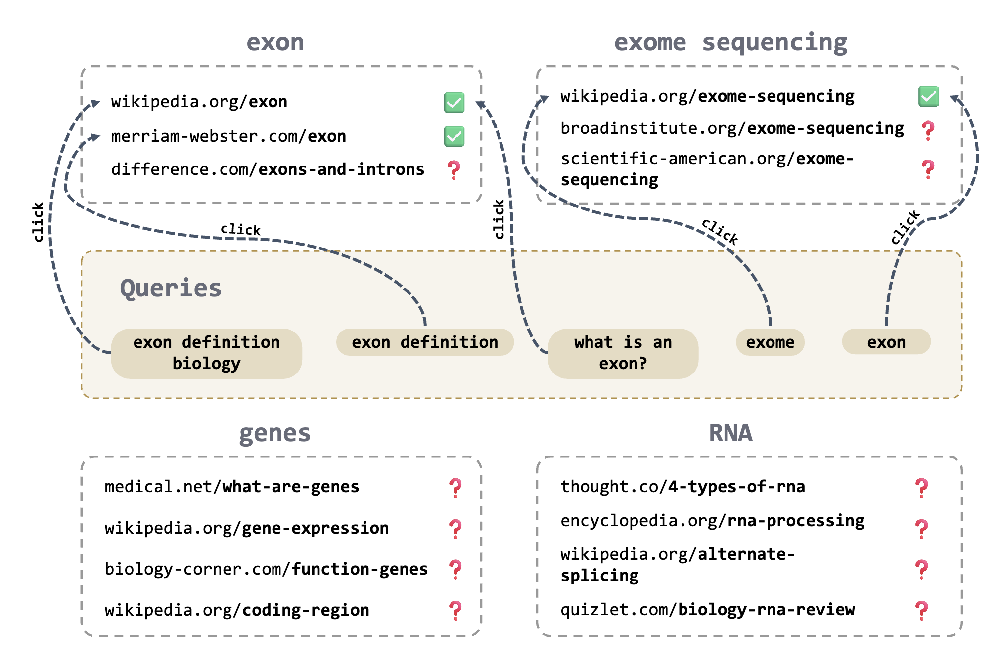
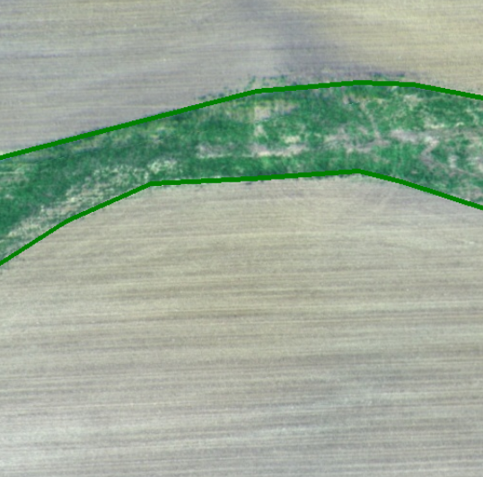

Hi! I am a first year Ph.D. student at Mila and Université de Montréal, advised by Prof. Aaron Courville and Prof. Laurent Charlin.
Previously, I spent two wonderful years as a Research Fellow at Microsoft Research India (MSRI), advised by Dr. Manish Gupta and Dr. Manik Varma. Currently, I am interested in understanding the essential ingredients required to build reasoning models using reinforcement learning!
I graduated from BITS Pilani in 2021 with a Bachelor's in Computer Science and a Master's in Mathematics. For my Bachelor's thesis, I worked with Dr. Soumendu Sinha and Prof. Pratik Narang on utilizing computer vision for precision agriculture.
Research

